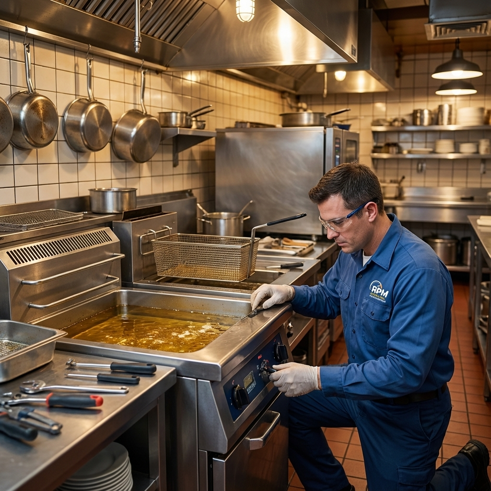

Memphis Commercial Cooking Equipment Repair
From pilot lights to thermostats, we fix the equipment that feeds Memphis.
Our Cooking Equipment Services
A broken oven or fryer stops the line. We specialize in fast, accurate repairs for high-volume commercial kitchens. We service gas and electric equipment from all major manufacturers.

Commercial Oven Repair
Convection ovens, combi-ovens, and pizza ovens. We fix heating elements,
fans, and door seals.
View Oven Services →

Commercial Fryer Repair
Thermostat calibration, pilot light repair, and high-limit switch
replacement. Keep the oil hot and the line moving.
View Fryer Services →
Flat Top Griddle Repair
Uneven heating? We calibrate thermostats and repair burners on all major
griddle brands.
View Griddle Services →
Oven Troubleshooting
Oven won't heat? Pilot won't stay lit? Check our expert troubleshooting
guide before calling.
Read Guide →
The Importance of Gas Safety
Gas leaks and carbon monoxide are serious risks in commercial kitchens. Our technicians are trained in gas safety protocols. If you smell gas or suspect a burner issue, don't wait—call us immediately. We verify proper combustion and ventilation with every repair.
Prevent Downtime Before It Hits the Dinner Rush
Our preventative maintenance plans keep your burners clean and your thermostats accurate.
View Maintenance Checklist